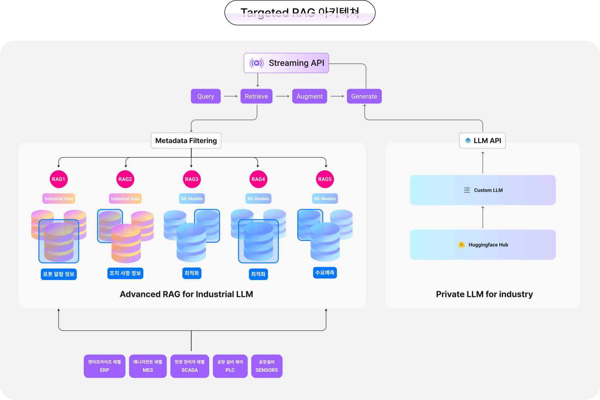

0
Horizon
in
industry
제조업의 AI 혁신을 가속하는 산업 특화 LLM 'Horizon'을 소개합니다
제조업의 AI 혁신을 가속하는
산업 특화 LLM 전략
Targeted RAG
Targeted RAG (Retrieval-Augmented Generation) 로 현장 맞춤 정보 신속 제공
특정 목적에 맞춰 데이터베이스를 선정하고,
해당 데이터베이스에 특화된 RAG(생성 및 검색) 모델을 적용하여 관련성 높은 정보를 제공
할 수 있습니다.
특화된 데이터베이스를 통해 RAG 모델이 더 신뢰할 수 있는 정보에 접근하게 되어
잘못된 정보 생성(할루시네이션)을 방지하고, 보다 정확한 답변을 빠르게 제공
합니다.
산업 현장에서 실시간으로 정확하고 신뢰할 수 있는 정보를 제공합니다.
이는 기업의 효율성과 생산성을 크게 향상시킵니다.

Accelerating AI innovation in manufacturing industry-specific LLM strategies
Accelerating AI innovation in manufacturing industry-specific LLM strategies
Accelerating AI innovation in manufacturing industry-specific LLM strategies
Accelerating AI innovation in manufacturing industry-specific LLM strategies
Accelerating AI innovation in manufacturing industry-specific LLM strategies
Accelerating AI innovation in manufacturing industry-specific LLM strategies
Meta filtering
메타 데이터 파일의 내용과 질문 쿼리의 유사도를 측정하여 유사도가 가장 높은 파일과 매칭
0.000
0.000
0.000
Top-3기준
99% 정확도
달성

LLMOps 체계
쉽고 안전한 커스텀 LLM 모델 운영 및 관리
다수의 커스텀 LLM 모델의 실험, 관리, 모니터링, 배포를
단일 AI 플랫폼(Runway)
쉽고 직관적으로 운영합니다
온프레미스를 포함
기업이 원하는 환경
에 구축합니다.
데이터 유출에 대한 염려없이
안정적인 운영
이 가능합니다
 industry
industry
industry
industry
industry
industry